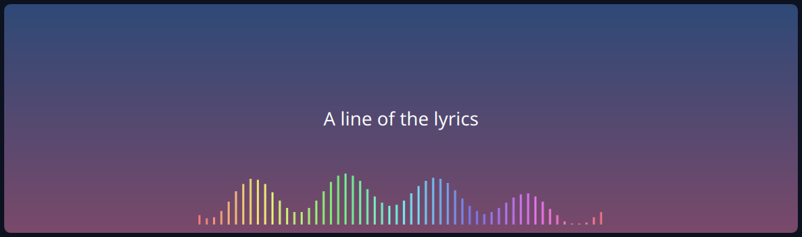
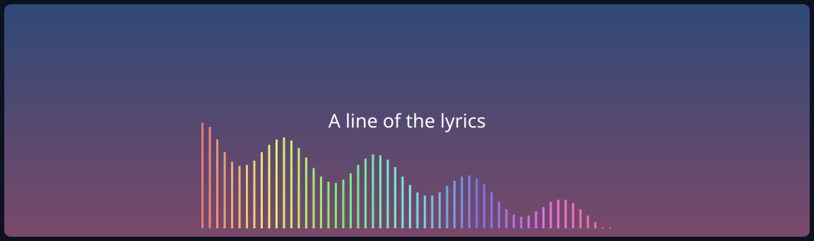

Karaoke, word by word
The words of the current line light up as they are sung, from word-timed lyrics. Off by default.
Synced lyrics, a visualizer and a media card for Spotify and YouTube Music on Plasma 6.
Every picture is a real render of the widget. Apply one, save your own, or press Go back to get your old setup again.

Plain bars, nothing else.
Try the controls. Each one is a working miniature of the real widget.
The words of the current line light up as they are sung, from word-timed lyrics. Off by default.
Japanese, Korean and Chinese, from the provider, human-made furigana or a local converter.
Four lyric sources are searched in parallel and scored on title, artist, length and album.

Bars, waves, an oscilloscope, a pulse orb, plasma, a terrain and a tunnel. Several run on the GPU.
Sharp, rounded, squircle, circle, a spinning record or a CD.
In the lyrics library, press once as each line starts. It takes the song's time and moves on.
Lyrics for the next songs in a shuffled queue are fetched before they start. The same extension keeps Next and Previous working in Chrome.
Every part of the card has its own place, size and colors. Write your own visualizer, seek bar or buttons as a QML file, or keep lyrics in a .lrc beside the song.
Tested on Arch Linux with Plasma 6 and Qt 6.12.
lyric-widget.sh downloads, builds and installs into /usr with sudo, then restarts plasmashell. It also updates and removes the widget.$ curl -fsSLO https://github.com/AWeebTaku/Lyrics-Widget/releases/latest/download/lyric-widget.sh $ bash lyric-widget.sh # later: look for a newer release, install it, or remove everything $ bash lyric-widget.sh check $ bash lyric-widget.sh update $ bash lyric-widget.sh uninstall
$ sudo pacman -S --needed base-devel cmake ninja qt6-base qt6-declarative qt6-websockets icu python cava $ git clone https://github.com/AWeebTaku/Lyrics-Widget && cd Lyrics-Widget $ ./scripts/build.sh # to remove everything later, preview first: $ ./scripts/uninstall.sh --dry-run
$ git clone https://github.com/AWeebTaku/Lyrics-Widget $ cd Lyrics-Widget/packaging/arch $ makepkg -si # to remove it again: $ sudo pacman -R lyric-widget-git